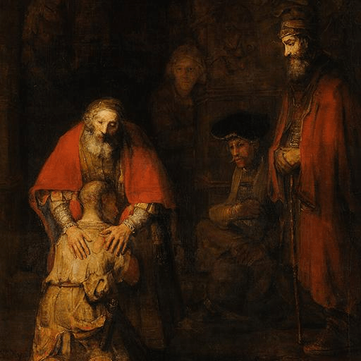

Hexagram 56 – Lv: The Traveler
Upper: Fire (☲) · Lower: Mountain (☶)

Core Meaning
You may be in a temporary, unfamiliar, or changing environment where your footing is not yet secure. Stay modest, adaptable, and careful. Build stability within yourself while you learn the new surroundings.
“I move through change with calm and find stability wherever I am.”
Blessing
May you find a place to settle within yourself, even while the road is unfamiliar.
Guidance by Life Area
Love
This may be a transitional period in love. Do not force certainty; keep your own life steady and let the relationship find its place.
Keep your own life steady:
- Do not force belonging.
- Let the relationship settle naturally.
Career
You may be working in a new or changing environment. Learn first, build goodwill, and establish yourself before pushing for long-term gains.
Learn the new environment first:
- Build useful connections.
- Establish yourself before expanding.
Health
Change can disrupt routines. Keep sleep, food, and basic care steady wherever you are.
Protect basic routines:
- Give extra care during transitions.
- Keep the body steady through change.
Finances
Keep finances flexible during uncertain periods. Reduce unnecessary spending and hold enough cash for change.
Cut unnecessary spending:
- Keep enough cash available.
- Preserve financial flexibility.
Relationships
Old connections may be shifting while new ones are still forming. Be sincere with the people you meet and let belonging develop naturally.
Meet people with sincerity:
- Do not rush belonging.
- Let good connections develop naturally.